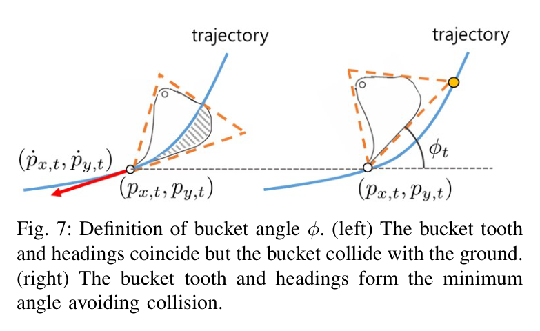
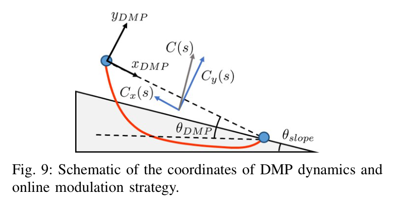
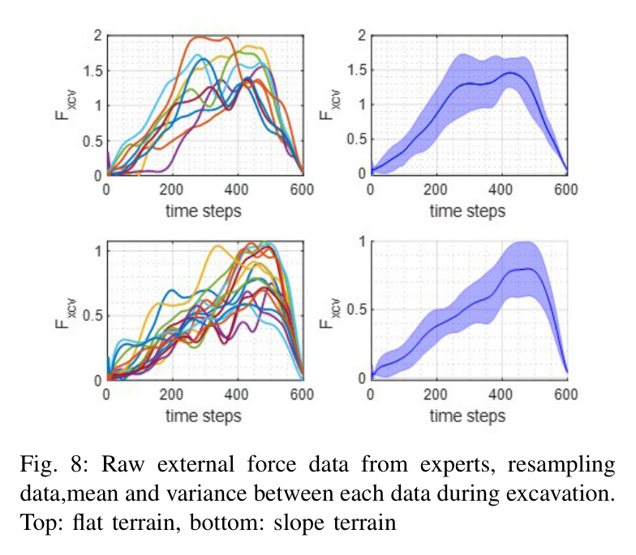
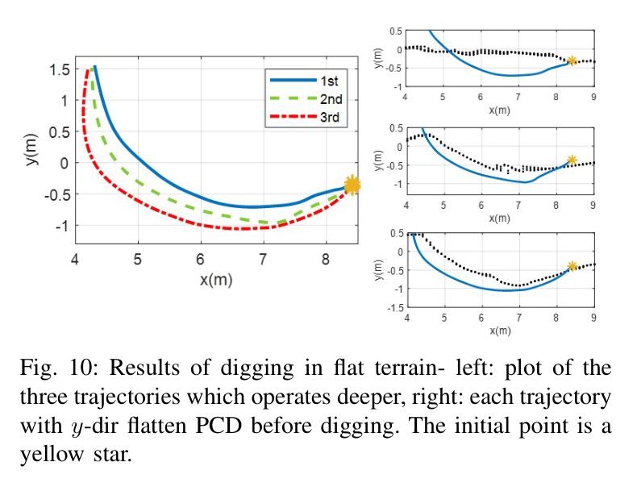
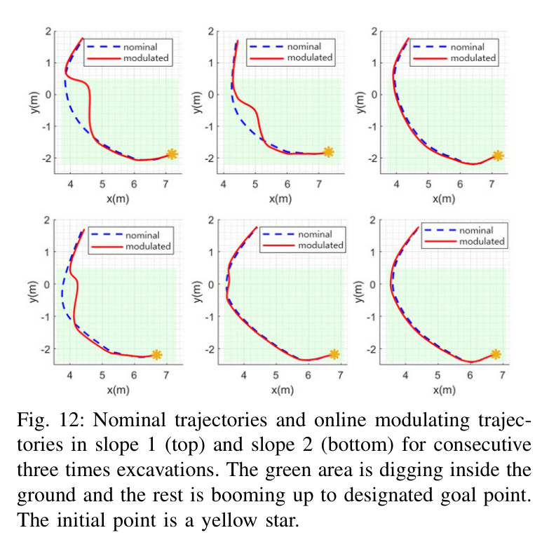
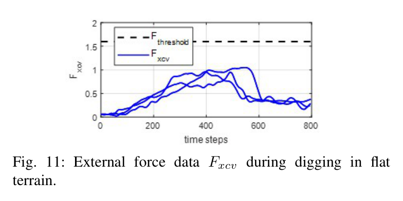
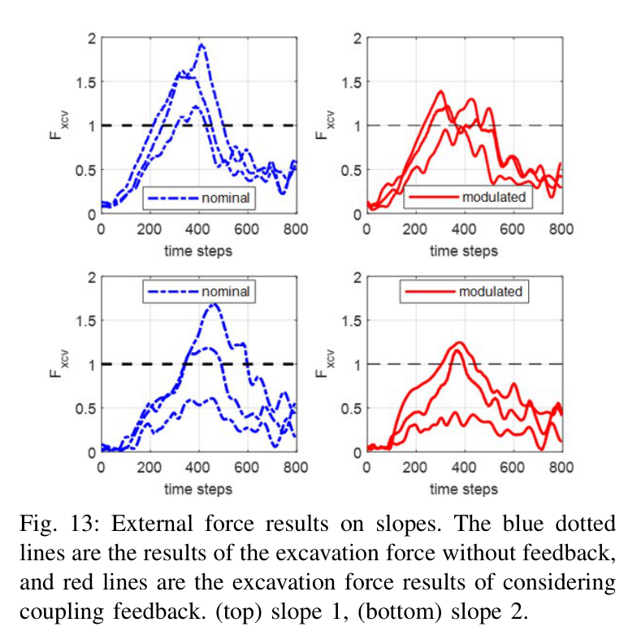
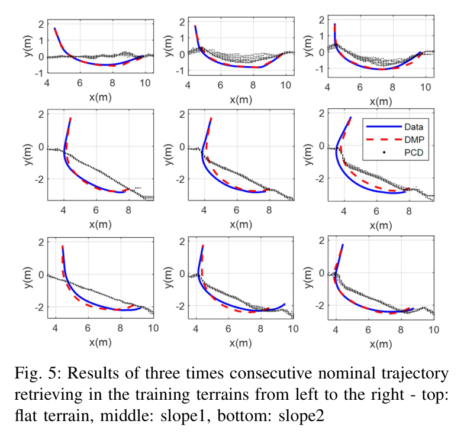
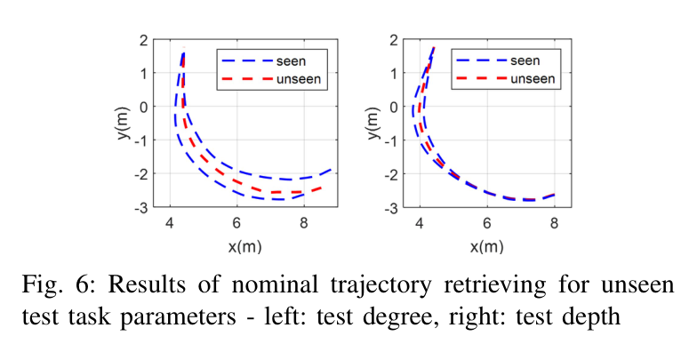

Expert-Emulating Excavation Trajectory Planning for Autonomous Robotic Industrial Excavator
Bukun Son, ChangU Kim, Changmuk Kim, Dongjun Lee · 2020 IEEE/RSJ International Conference on Intelligent Robots and Systems (IROS)
한줄 요약 — 소량의 숙련자 시연을 DMP의 목표 수렴 구조 안에 인코딩하고 MLP가 지형별 shaping force를 복원하도록 한 뒤, 모멘텀 기반 굴착력 추정이 전문가 임계 패턴을 초과할 때 지면 법선 방향 coupling term을 실시간 주입해 산업용 38톤 굴착기의 생산성과 과도한 부하 회피를 함께 검증했다.
1.연구 배경 및 동기
숙련자의 계획 형상과 힘 대응을 하나의 실행 프레임워크로
자율 굴착에서 가장 어려운 부분은 토양 동역학이 복잡하고 현장마다 달라 숙련자 수준의 자유형 궤적을 모델 기반으로 계산하기 어렵다는 점이다. 기존 연구는 토양을 무시한 기구학 계획, 직선 또는 고정 형상, 침투·끌기·말아올리기의 단순 단계에 머무르는 경우가 많았다. 동시에 지하 파이프와 암석은 지상 LiDAR만으로 발견하기 어렵고, 사람이 탑승하지 않는 자율 장비에서는 과도한 힘을 즉시 완화할 주체가 없다.
논문은 숙련자가 지형을 보고 공칭 궤적을 세운 뒤 장비 반력으로 경로를 수정한다는 전략을 두 부분으로 모사한다. 먼저 지형 경사와 깊이에 조건화된 전문가 궤적을 DMP로 학습해 목표점 수렴과 형상 보존을 얻고, 실행 중에는 실린더 압력·동역학 기반 굴착력 추정을 사용해 과도한 힘이 생기는 구간의 궤적을 얕게 변조한다. 데이터가 비싼 산업용 굴착기에서 대규모 end-to-end 학습 대신 구조적이고 설명 가능한 DMP와 작은 MLP를 선택했다.
3자유도 굴착기 동역학과 모멘텀 외란관측기로 실린더 압력에서 버킷 끝 굴착력을 실시간 추정했다.
전문가 힘 임계값을 초과하는 구간에서 coupling movement primitive로 공칭 경로를 얕게 변조했다.
Doosan DX380LC 실차에서 학습 범위 내·외 경사, 평지와 연속 세 번 굴착을 시험하고 생산성·힘 응답을 보고했다.
2.방법론 및 시스템 구성
플랫폼은 IMU, 실린더 압력센서, RTK-GNSS와 Velodyne VLP-16 LiDAR를 장착한 Doosan DX380LC다. 굴착은 선회 없는 사지탈 평면 운동으로 제한하고, 제조사 PI 관절제어가 주어진 상태에서 상위 버킷 끝 궤적을 생성한다. LiDAR 점군의 x 3~11m, z -1.5~1.5m 관심영역을 평면화한 뒤 구간 경사면과 가우시안 함수를 피팅해 경사각과 굴착 깊이를 추출한다.
전문가 궤적의 버킷 끝 x·y 위치를 각각 DMP로 표현하고 공통 clock signal을 사용한다. 시작·목표 거리 차이를 줄이는 공간 정규화와 8초·100Hz·800스텝 시간 정규화를 거쳐 shaping force를 계산한다. MLP는 clock signal과 지형 파라미터를 받아 shaping force의 비선형 항을 출력한다. 버킷 자세는 궤적 속도 방향과 버킷 외접 삼각형의 지면 충돌을 피하는 최소 각도로 별도 결정한다.
실행 중 3자유도 동역학과 모멘텀 외란관측기로 굴착력을 추정한다. 힘의 정규화 크기가 평지·경사 전문가 임계값을 넘으면 양의 초과분만 사용해 지면 법선 방향 coupling term을 만든다. 이 항을 DMP의 속도와 가속도 수준에 동시에 넣어 공칭 궤적을 얕게 바꾸고 접촉 오버슈트를 줄인다.
처리 파이프라인
1
전문가 궤적·힘 수집
평지와 20.38도·28.30도 경사에서 전문가 연속 굴착 궤적과 압력 기반 힘을 수집하고, 논문이 보고한 총 18개 데이터셋을 시간·공간 정규화한다.
원문 Figure 4 · PDF p.4 — Fig. 4: An architecture of the learning and retrieving the nominal trajectory.

원문 Figure 7 · PDF p.5 — Fig. 7: Definition of bucket angle φ. (left) The bucket tooth and headings coincide but the bucket collide with the ground. (right) The bucket tooth and headings form the minimum angle avoiding collision.

원문 Figure 9 · PDF p.6 — Fig. 9: Schematic of the coordinates of DMP dynamics and online modulation strategy.
3.핵심 기술
데이터 효율적인 DMP-MLP 전문가 모사
DMP는 전문가 궤적을 임계감쇠 attractor와 shaping force로 분리한다. 목표점이 바뀌어도 질적 형상을 유지하고 마지막에는 목표로 수렴하므로 단순 좌표 회귀보다 실차 실행의 안정성을 확보하기 쉽다. MLP는 모든 위치점을 직접 출력하지 않고 지형과 시간에 따른 shaping force만 학습해 제한된 시연을 활용한다.
학습 MLP는 64노드와 16노드의 두 완전연결층으로 구성된다.
학습 지형은 평지와 20.38도·28.30도 경사다.
공칭 위치 재생 RMS 오차는 0.51m이며 이 중 주요 원인은 0.42m의 초기점 오차다.
지형 특징과 버킷 자세의 명시적 분리
고차원 점군을 직접 정책에 넣지 않고 경사와 깊이라는 두 태스크 파라미터로 줄인다. DMP는 버킷 끝 위치만 만들고, 버킷 자세는 버킷 치형이 진행방향을 따르되 외접 삼각형이 지면과 충돌하지 않는 최소 각도로 계산한다. 이 분리는 데이터 요구량을 줄이고 각 단계의 의미를 설명하기 쉽지만, 지나간 경로의 토사가 모두 제거됐다는 가정을 둔다.
LiDAR 관심영역은 x 3~11m, z -1.5~1.5m다.
경사면과 단일 pit 깊이를 각각 구간 피팅과 가우시안 피팅으로 얻는다.
버킷 자세는 DMP가 아닌 별도 기하 알고리즘의 출력이다.
힘 추정 기반 안전 변조
전문가 힘 데이터는 굴착 중 일정 최대치를 유지하는 사다리꼴 경향을 보였고, 평지와 경사에서 서로 다른 임계 수준을 사용했다. 실차는 버킷 힘센서 대신 IMU와 실린더 압력으로 외력을 추정한다. 추정력이 임계값보다 클 때만 경로를 얕게 바꿔 과도한 힘을 낮추며, 공칭 경로 형상과 목표 수렴은 DMP가 유지한다.
원문 Figure 3 · PDF p.3 — Fig. 3: The acquired expert excavation trajectories (processed data from eighteen data-set): (a) three rounds of consecutive excavation in flat and two different angled slopes; (b) modi- fied training trajectory matching goal position yg to equalize spatial scaling.

원문 Figure 8 · PDF p.5 — Fig. 8: Raw external force data from experts, resampling data,mean and variance between each data during excavation. Top: flat terrain, bottom: slope terrain
학습 범위 안의 경사와 범위 밖 경사에서 지형 조건부 궤적 생성의 일반화 거동을 확인했다.
평지에서는 연속 굴착에 따라 깊어지는 공칭 궤적과 최종 적재량을 측정했다.
두 경사면에서는 공칭·변조 궤적의 최대 정규화 굴착력과 임계값 초과 누적오차를 비교했다.
변조 궤적이 전문가 사다리꼴 힘 패턴에 가까워지는지 그래프와 정량값으로 평가했다.
비교 기준
DMP-MLP 공칭 전문가 모사 궤적
굴착력 임계 초과 피드백을 추가한 coupling 변조 궤적
평가 지표
전문가 원 궤적 대비 위치 RMS 오차
평지 버킷 적재량과 버킷 충전율
경사별 최대 정규화 굴착력
힘 임계값 초과 누적오차의 공칭/변조 비율
학습 범위 내 보간과 범위 밖 외삽 경사에서의 궤적 생성

원문 Figure 10 · PDF p.6 — Fig. 10: Results of digging in flat terrain- left: plot of the three trajectories which operates deeper, right: each trajectory with y-dir flatten PCD before digging. The initial point is a yellow star.

원문 Figure 12 · PDF p.7 — Fig. 12: Nominal trajectories and online modulating trajec- tories in slope 1 (top) and slope 2 (bottom) for consecutive three times excavations. The green area is digging inside the ground and the rest is booming up to designated goal point. The initial point is a yellow star.
핵심 결과 해석
학습된 공칭 궤적은 전문가 궤적의 구조를 재현했지만 위치 RMS 오차는 0.51m였고 초기점 차이 0.42m가 주된 원인으로 보고됐다. 평지 연속 굴착에서는 이전 굴착으로 변한 깊이에 따라 점차 더 깊은 궤적을 생성했다. 평지의 추정력이 1.5×10^5N 임계값 아래에 있어 coupling 변조는 개입하지 않았고, 공칭 DMP-MLP만으로 3.03톤, 버킷 용량의 89.9%를 적재했다.
두 경사면에서 힘 변조는 공칭 궤적보다 얕은 경로를 만들었다. 공칭 최대 정규화 힘 1.68과 1.93은 변조 후 1.25와 1.38로 낮아졌고, 임계값을 넘는 누적 힘 오차는 공칭이 변조보다 각각 1.72배와 2.40배 컸다. 이는 힘 피드백이 최대 부하와 초과 지속시간을 함께 줄였음을 보여준다. 다만 시험 지형 수와 전문가 시연이 적고, 보간·외삽 일반화에 대한 별도 정확도 지표나 통계 검정은 없다.
정량 결과
평가 항목
정량 결과
조건·맥락
원문 근거
공칭 궤적 위치 RMS 오차
0.51m
학습된 DMP-MLP 궤적과 전문가 원 궤적 비교
PDF p.4
초기점 오차
0.42m
0.51m RMS 오차의 주된 원인으로 보고
PDF p.4
평지 실차 적재량
3.03톤, 버킷 용량의 89.9%
힘이 임계값 이하라 온라인 변조가 개입하지 않은 공칭 궤적
PDF p.6
경사 1 최대 정규화 굴착력
1.68→1.25
공칭→힘 변조 궤적
PDF p.6
경사 2 최대 정규화 굴착력
1.93→1.38
공칭→힘 변조 궤적
PDF p.6
임계 초과 누적오차 비율
공칭이 변조보다 경사별 1.72배·2.40배
전문가 힘 임계값을 넘은 누적 오차 비교
PDF p.6
실차 통신 주기
CAN 100Hz, LiDAR 10Hz
NUC·Jetson TX2 기반 ROS 실차 시스템
PDF p.6
실패 사례와 경계조건
공칭 궤적 재생 오차 0.51m 중 0.42m가 초기점 차이에서 발생해 시작 상태 정렬에 민감하다.
외삽 경사 32.2862도에서는 학습 범위 밖 입력의 품질을 보장할 수 없고 논문도 외삽 성능 개선을 후속 과제로 남겼다.
평지 시험은 힘이 임계값 아래여서 온라인 변조가 실제로 작동하는 평지 사례를 제공하지 않는다.
버킷 자세 계산은 이미 지나간 궤적의 토사가 모두 제거됐다고 가정해 재퇴적이나 큰 암석이 있으면 충돌 여유가 달라질 수 있다.

원문 Figure 11 · PDF p.6 — Fig. 11: External force data Fxcv during digging in flat terrain.

원문 Figure 13 · PDF p.7 — Fig. 13: External force results on slopes. The blue dotted lines are the results of the excavation force without feedback, and red lines are the excavation force results of considering coupling feedback. (top) slope 1, (bottom) slope 2.
5.한계 및 향후 연구
현재 한계
전문가 데이터가 총 18개 수준이고 학습 지형도 평지와 두 경사로 제한된다.
지형 입력이 경사와 깊이 두 값뿐이라 복잡한 다중 굴곡과 토질 차이를 표현하지 못한다.
실험은 사지탈 평면의 단일 굴착 프리미티브이며 선회·배출·차체 이동을 포함하지 않는다.
coupling gain과 평지·경사 힘 임계값을 수동 설정했다.
위치 RMS 오차가 0.51m이고 초기점 정렬 오차가 큰 비중을 차지한다.
실제 미지 토질과 지하 장애물 종류를 바꾼 체계적 일반화 시험이 없다.
향후 연구
굴착기 시스템에 맞는 최적 coupling gain을 자동 탐색한다.
학습 범위를 벗어난 지형 파라미터의 외삽 성능을 개선한다.
다양한 토질과 지하 장애물에서 전문가 힘 임계값의 일반성을 검증한다.
시작점 정렬과 공간 정규화를 개선해 공칭 궤적 RMS 오차를 줄인다.
선회·적재·이동을 포함한 전체 작업계획과 DMP 굴착 프리미티브를 통합한다.
6.한마디로 정리
핵심 방법은?
지형 경사·깊이에 조건화된 DMP shaping force를 64-16 MLP로 학습하고, 추정 굴착력이 전문가 임계값을 넘으면 법선 방향 coupling term으로 공칭 경로를 얕게 만든다.
핵심 결과는?
DX380LC 평지에서 3.03톤·89.9% 적재를 달성했고, 경사면 최대 정규화 힘을 1.68→1.25와 1.93→1.38로 낮췄다.
한계는?
소량·소수 지형 데이터와 수동 gain·임계값에 의존하며, 외삽·토질·지하 장애물 일반화와 전체 굴착 사이클 통합은 검증되지 않았다.
#작업·궤적계획#학습·RL·IL·VLA#제어·MPC#DMP#MLP#학습 시연#외란관측기#coupling movement primitives
나의 의견 / 우리 연구와의 연관성
이 연구는 숙련자의 자유형 궤적을 구조화된 운동 프리미티브로 학습하고, 실차에서 관측 가능한 압력 신호로 안전하게 수정하는 연결고리를 제시한다. 순수 모방학습과 순수 모델 기반 제어 사이에서 공칭 형상은 데이터로, 목표 수렴과 온라인 대응은 동역학 구조로 담당한다는 점이 중요하다.
후속 자율 굴착 시스템에서는 지형·토질 임베딩을 강화하고 MCV 유량 제약, 미끄럼·전복 제약과 결합할 수 있다. DMP 출력 자체를 최종 명령으로 사용하기보다 물리 제약 최적화와 안전 감시를 통과시키면 대형 장비 적용의 설명성과 강건성을 높일 수 있다.
소량 전문가 데이터로 초기 공칭 굴착 프리미티브를 만드는 기준 방법이다.
압력 기반 힘 피드백은 시각으로 보이지 않는 지중 위험의 실시간 대체 감각이 된다.
DMP의 목표 수렴 구조는 온라인 변조 후 작업 종료 상태를 유지하는 데 유리하다.
토질 적응, 자동 gain 선정과 유압·안정성 제약을 추가하면 현장 일반화 연구로 이어질 수 있다.
7.전체 그림·표
본문 핵심 위치에 배치하지 않은 원문 Figure와 Table을 원문 페이지 순서로 수록한다.

원문 Figure 5 · PDF p.4 — Fig. 5: Results of three times consecutive nominal trajectory retrieving in the training terrains from left to the right - top: flat terrain, middle: slope1, bottom: slope2

원문 Figure 6 · PDF p.4 — Fig. 6: Results of nominal trajectory retrieving for unseen test task parameters - left: test degree, right: test depth